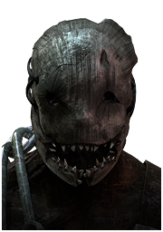

트래퍼(TRAPPER)

DEAD BY DAYLIGHT의 대망의 첫 번째 살인마이자 이 게임의 얼굴 마담격 살인마. 섬뜩한 가면과 지저분한 작업복, 근육돼지 몸매에 여기저기에 박힌 금속 조각과 상처들이 특징인 살인마이다.
생존자가 밟으면 일정 시간 움직이지 못하게 붙잡고 부상을 입히는 곰덫(Bear trap)을 전략적으로 설치하여 생존자들의 이동 경로를 제한하고 추격전을 유리하게 할 수 있는 살인마이다. 덫을 잘 깔아놨다면 추격전에 특화돼 있다.
고유 기술로는 불안한 존재(Unnerving Presence), 짐승 같은 힘(Brutal Strength), 동요(Agitation)가 있으며, 생존자들을 견제하고 압박하는데에 특화되어있다.
튜토리얼로 첫 등장하는 살인마답게 초보든 고인물이든 쓰기 무난한 살인마로 평가 받는다. 데바데 초창기 때부터 평가가 괜찮은 살인마로 지금까지 이어져 오지만 문제는 덫을 치고 덫주변으로 수비하는 형태의 수동형 살인마라 좀 답답한 편이다. 고티어 살인마에 들으려면 너스, 스피릿, 블라이트, 힐빌리처럼 빠른 기동성을 보유해야 발전기든 생존자든 터널링이 수월해지는데 기동성이 전혀 없어 답답하다. 물론 이러한 단점은 덫을 쓰라고 있는 것. 이러한 덫들은 인성존 봉쇄나 발전기 수비에 엄청난 장점을 가지고 있다.
다만 고랭으로 갈수록 단점이 명확하고, 다인큐에게 매우 약하다는 점탓에 선택률이 낮은 살인마.
- 고유 기술
Unnerving Presense
Brutal Strength
- 애드온
Trapper Sack 덫 운반용 자루
Strong Coil Spring 강력 코일 스프링
- 장점
인성존 원천봉쇄
트래퍼의 시작과 끝. 곰 덫 설치라는 단순한 능력임에도 불구하고 트래퍼가 오랫동안 중간 이상은 가는 살인마로 평가받는 이유다. 트래퍼를 제외한 뚜벅이 살인마들은 생존자가 판자존이나 인성존에 들어가서 거리를 벌리는 플레이를 하게 되면 불가항력적으로 시간을 많이 소모해야 되지만 트래퍼는 맵의 주요 인성존이나 오브젝트에 미리 덫을 깔아둬서 판자존과 인성존을 이용해 시간을 벌려는 생존자를 카운터칠 수 있으며 덫을 설치하는 척 흉내만 내서 인성존을 돌던 생존자가 다른 곳으로 움직이도록 유도할 수도 있다.
덫을 통한 심리적 압박과 변수창출 능력
생존자들이 덫을 한두 번 밟다 보면 심리적 압박감을 크게 가지게 되고 이로 인해 활동성과 활동 반경이 줄어든다. 판자 근처는 물론, 풀 숲이나 창틀 주변을 지날 때마다 덫이 있을지 모른다는 생각에 걸어다니면서 덫 수색 작업에 시간을 허비하게 되며 도망치기 유리한 지형에 이미 덫이 설치되어 있을거라는 심리적 압박을 가지고 엉뚱한 곳으로 도망을 치다 한 대 맞는 등 생존자에게 심리적 우위를 점할 수 있다. 또한 덫을 밟은 생존자는 덫에서 빠져나온 후에도 부상 상태가 되며, 트래퍼의 코앞에서 생존자가 덫을 밟았을 경우 확정적으로 갈고리에 걸 수 있어 순식간에 판이 뒤집히기도 한다.